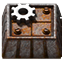

Craft visually
Edit ingredients and products in connected flowcharts. Expand ingredient recipes to inspect a whole crafting chain, or turn simple equations into recipes.

FACTORIO MODLOCAL DESKTOP EDITOR · BY FURYZIN
Turn ideas into Factorio mods. Create items, connect recipes, edit technologies, and export a mod ready for your game.
Requires Python 3.10+ with Tkinter and your own Factorio installation. No pip packages needed.
Edit ingredients and products in connected flowcharts. Expand ingredient recipes to inspect a whole crafting chain, or turn simple equations into recipes.
Make items, fluids, science packs and mineable ores. Build machine variants from loaded templates and choose their allowed recipes.
Edit the technology tree, assign recipe unlocks, and add or remove science packs from multiple technologies at once.
Save a project, review pending requirements, then export a new mod or an updated copy of a loaded mod with a change report.
GET STARTED
Install Python with Tkinter, then extract the download into a folder you can write to.
Double-click Launch Factorio Mod Creation Tool.bat. Select the Factorio folder containing bin and data; optionally select trusted mods.
Load the resolved game data, make your changes, and save your project. Export the mod ZIP into your Factorio mods folder and enable it in the game.
The desktop app has no analytics or sign-in. The website has no tracking scripts, external fonts, or forms. Game data, personal projects, settings, and exported mods are not included in the public download. GitHub may process standard hosting requests under its own privacy policy.
Load only mods you trust: their scripts run through Factorio's normal data stage. This is an independent community tool, not an official Wube Software product. Factorio and its artwork belong to Wube Software.
Please consider mentioning Factorio Mod Creation Tool by FuryziN in your mod description and linking to this website. Giving credit is optional, but it helps other mod creators discover the app.
Suggested credit: “Created with Factorio Mod Creation Tool by FuryziN: https://fury3215432.github.io/factorio-mod-creation-tool/”